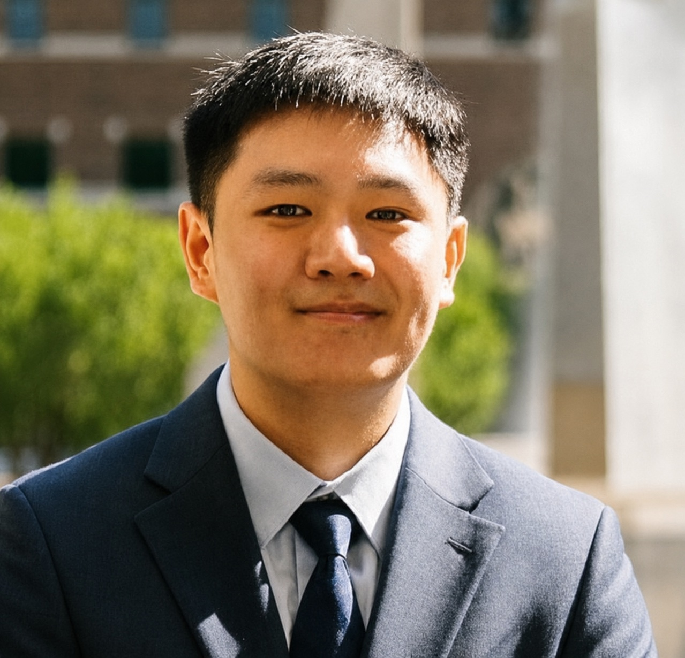

M.S. Researcher, Elmore Family School of Electrical & Computer Engineering, Purdue University
Hello! I am an M.S. researcher at the ION Lab in Purdue's Elmore Family School of ECE (Electrical and Computer Engineering), advised by Prof. Christopher G. Brinton. I am currently actively seeking Ph.D. opportunities in self-play learning and/or trustworthy and fair learning.

My work currently centers on fair and trustworthy machine learning and self-learning models, with the most experience within a Federated Learning (FL) setting, where models are trained across many distributed clients without sharing their raw data. I'm interested in how these systems can stay robust and equitable across clients with very different data, and in self-play and online learning as a way for models to keep improving from their own experience and real-time feedback.
ION Lab · Elmore Family School of Electrical & Computer Engineering, Purdue University
As a fully-funded M.S. researcher, I design algorithms for foundation and world models in Federated Learning. Right now I'm most excited about personalized foundation models that work across multiple modalities and tasks, and about online self-play learning, directions where our methods have been beating the state of the art by roughly 4–8%.
ION Lab · Elmore Family School of Electrical & Computer Engineering, Purdue University
I joined the ION Lab during my undergraduate, working alongside PhD and postdoctoral researchers on edge learning. My focus was on two of the harder problems in Federated Learning: handling data heterogeneity across clients and adversarial backdoor attacks, where the approaches I develop outperformed the prior state of the art by 5–30%.
Purdue University
I helped run this data-science seminar for a class of around 300 students, covering Python, R, bash, and SQL, with topics ranging from plotting and NumPy/Pandas to filtering data and exploring it from the command line. Week to week, I held office hours, wrote up assignment solutions, and graded coursework, and I stepped in to support the 900-student intro version (TDM 101) when the staff needed extra hands.
Purdue University
This was an introductory C course for about 400 students, covering the fundamentals: file I/O, memory layout and management, and pointers. In addition, guidance for practical tools like SSH and Vim. I ran two weekly lab sessions of 30–40 students each, wrote and graded the post-lab quizzes, and proctored exams.
M.S., Electrical & Computer Engineering
Purdue University, West Lafayette, IN
B.S. Computer Science · B.A. Minor, Japanese
Purdue University · John Martinson Honors College